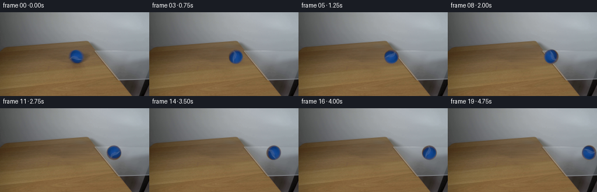
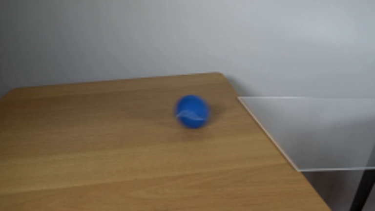
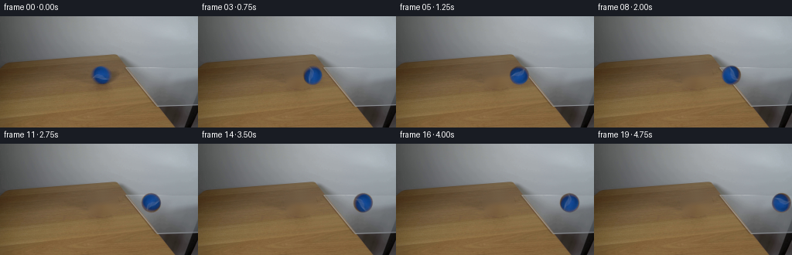
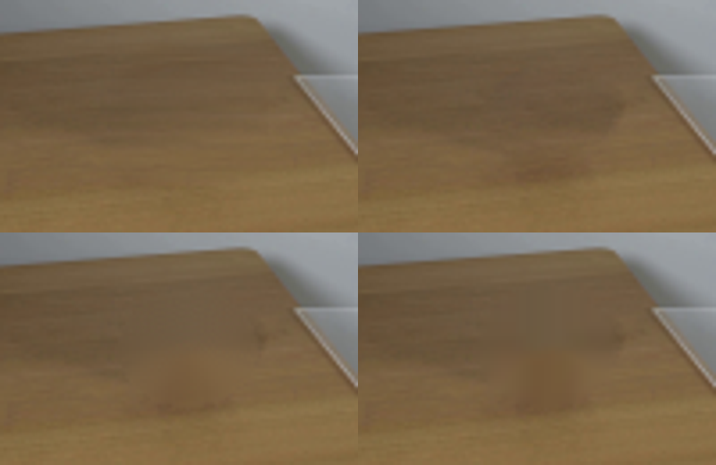
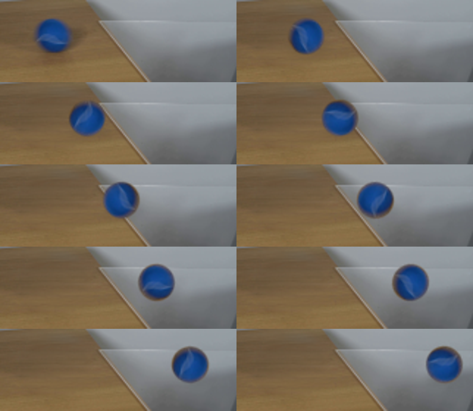

CODING AGENTS AS PIXEL WORLD MODELS
traex/GPT-5.6-Sol · 0025
点击播放 · 原生 RGB 像素
逐轮保存的候选
回放视频、检查图与代码变化。
每份候选均可单独播放。实际图片检查记录在下方工具轨迹中。
候选 01播放与检查图
点击播放 · 原生 RGB 像素

展开代码变化
--- 上一保存版本
+++ 本次保存版本
@@ -0,0 +1,130 @@
+from pathlib import Path
+import cv2
+import numpy as np
+from PIL import Image
+import artifact_io
+
+CASE_DIR = Path(__file__).resolve().parent
+
+
+def soft_object_matte(h=39, w=39, cx=19.0, cy=19.0):
+ """A softly antialiased circular matte matching the fuzzy ball silhouette."""
+ yy, xx = np.mgrid[0:h, 0:w].astype(np.float32)
+ # The photographed sphere is just perceptibly taller than wide.
+ d = np.sqrt(((xx-cx)/12.25)**2 + ((yy-cy)/12.55)**2)
+ # opaque through the body, with a narrow, soft photographic edge
+ return np.clip((1.055-d)/0.105, 0.0, 1.0)
+
+
+def clean_plate(source):
+ """Remove the ball and its original soft cast shadow from the table."""
+ h, w = source.shape[:2]
+ mask = np.zeros((h, w), np.uint8)
+ # Include the dim halo/shadow to the right and below, not just the blue body.
+ cv2.ellipse(mask, (132, 77), (20, 16), 0, 0, 360, 255, -1, cv2.LINE_AA)
+ # TELEA follows the nearly horizontal local wood grain better here than a flat fill.
+ plate = cv2.inpaint(source, mask, 5.0, cv2.INPAINT_TELEA)
+ # The inpaint can be a little overly smooth. Reintroduce a very faint, local,
+ # horizontal grain sampled from clean timber to the left, only in the interior.
+ inner = cv2.GaussianBlur((mask > 0).astype(np.float32), (0, 0), 2.5)[..., None]
+ sample = np.roll(source, 45, axis=1).astype(np.float32)
+ # Match the sample's broad tone to the inpainted neighborhood before using detail.
+ low_s = cv2.GaussianBlur(sample, (0, 0), 4.0)
+ detail = (sample - low_s) * 0.16
+ plate = np.clip(plate.astype(np.float32) + detail * inner, 0, 255).astype(np.uint8)
+ return plate
+
+
+def extract_ball(source):
+ """Extract the ball pixels, including the curved pale seam, without its shadow."""
+ # Center of the ball in frame zero is approximately (130, 76).
+ pad = 19
+ crop = source[76-pad:76+pad+1, 130-pad:130+pad+1].copy()
+ alpha = soft_object_matte(*crop.shape[:2])
+ # Suppress a trace of brown background that could otherwise rotate around the rim.
+ # Keep all interior pixels (including the pale tennis-ball seam) intact.
+ yy, xx = np.mgrid[0:crop.shape[0], 0:crop.shape[1]].astype(np.float32)
+ d = np.sqrt(((xx-19)/12.25)**2 + ((yy-19)/12.55)**2)
+ alpha[d > 1.08] = 0
+ return crop.astype(np.float32), alpha.astype(np.float32)
+
+
+def rotate_rgba(rgb, alpha, degrees):
+ h, w = alpha.shape
+ M = cv2.getRotationMatrix2D(((w-1)/2.0, (h-1)/2.0), degrees, 1.0)
+ # Rotate premultiplied color, avoiding dark/color fringes at the fuzzy edge.
+ premul = rgb * alpha[..., None]
+ rp = cv2.warpAffine(premul, M, (w, h), flags=cv2.INTER_CUBIC,
+ borderMode=cv2.BORDER_CONSTANT, borderValue=0)
+ ra = cv2.warpAffine(alpha, M, (w, h), flags=cv2.INTER_CUBIC,
+ borderMode=cv2.BORDER_CONSTANT, borderValue=0)
+ ra = np.clip(ra, 0.0, 1.0)
+ out = np.zeros_like(rp)
+ nz = ra > .015
+ out[nz] = rp[nz] / ra[nz, None]
+ return np.clip(out, 0, 255), ra
+
+
+def composite(frame, rgb, alpha, center_x, center_y):
+ h, w = alpha.shape
+ x0 = int(round(center_x - (w-1)/2))
+ y0 = int(round(center_y - (h-1)/2))
+ x1, y1 = x0+w, y0+h
+ ix0, iy0 = max(x0, 0), max(y0, 0)
+ ix1, iy1 = min(x1, frame.shape[1]), min(y1, frame.shape[0])
+ if ix1 <= ix0 or iy1 <= iy0:
+ return
+ sx0, sy0 = ix0-x0, iy0-y0
+ sx1, sy1 = sx0+(ix1-ix0), sy0+(iy1-iy0)
+ a = alpha[sy0:sy1, sx0:sx1, None]
+ region = frame[iy0:iy1, ix0:ix1]
+ region[:] = region*(1-a) + rgb[sy0:sy1, sx0:sx1]*a
+
+
+def add_shadow(frame, cx, cy, on_glass):
+ """Soft contact shadow; it becomes weaker/cooler on transparent glass."""
+ h, w = frame.shape[:2]
+ # Draw into a small float mask and blur for natural penumbra.
+ m = np.zeros((h, w), np.float32)
+ axes = (13, 5)
+ cv2.ellipse(m, (int(round(cx+2.7)), int(round(cy+8.2))), axes,
+ 0, 0, 360, 1.0, -1, cv2.LINE_AA)
+ m = cv2.GaussianBlur(m, (0, 0), 3.2 if not on_glass else 2.7)
+ strength = 0.28 if not on_glass else 0.16
+ # A neutral/slightly cool transmitted shadow, multiplying existing surface detail.
+ shade = np.array([0.70, 0.72, 0.75], np.float32)
+ a = np.clip(m*strength, 0, .35)[..., None]
+ frame[:] = frame*(1-a) + frame*shade*a
+
+
+def generate():
+ source = np.asarray(Image.open(CASE_DIR/'first_frame.png').convert('RGB'), dtype=np.uint8)
+ plate = clean_plate(source)
+ ball_rgb, ball_alpha = extract_ball(source)
+ frames = []
+ for i in range(20):
+ if i == 0:
+ # Contract: the provided frame must be reproduced byte-for-byte.
+ frames.append(source.copy())
+ continue
+
+ frame = plate.astype(np.float32)
+ # Constant-speed rolling on the common, level table/glass surface.
+ # Six pixels per 1/4 second puts the sphere substantially across the pane
+ # by the final frame while retaining a natural real-time pace.
+ cx = 130.0 + 5.9*i
+ cy = 76.0
+ # Displacement/radius gives physical angular roll (clockwise toward the right).
+ angle = -(cx-130.0) / 11.7 * (180.0/np.pi)
+ rr, aa = rotate_rgba(ball_rgb, ball_alpha, angle)
+ # Boundary under the center at y=76 is x ~=169; smoothly transition shadow.
+ glass_mix = np.clip((cx-158.0)/23.0, 0.0, 1.0)
+ add_shadow(frame, cx, cy, glass_mix > 0.48)
+ composite(frame, rr, aa, cx, cy)
+ frames.append(np.clip(np.rint(frame), 0, 255).astype(np.uint8))
+
+ return np.stack(frames, axis=0)
+
+
+if __name__ == '__main__':
+ artifact_io.save(generate(), CASE_DIR)
候选 02播放与检查图
点击播放 · 原生 RGB 像素

展开代码变化
--- 上一保存版本
+++ 本次保存版本
@@ -18,21 +18,26 @@
def clean_plate(source):
"""Remove the ball and its original soft cast shadow from the table."""
- h, w = source.shape[:2]
- mask = np.zeros((h, w), np.uint8)
- # Include the dim halo/shadow to the right and below, not just the blue body.
- cv2.ellipse(mask, (132, 77), (20, 16), 0, 0, 360, 255, -1, cv2.LINE_AA)
- # TELEA follows the nearly horizontal local wood grain better here than a flat fill.
- plate = cv2.inpaint(source, mask, 5.0, cv2.INPAINT_TELEA)
- # The inpaint can be a little overly smooth. Reintroduce a very faint, local,
- # horizontal grain sampled from clean timber to the left, only in the interior.
- inner = cv2.GaussianBlur((mask > 0).astype(np.float32), (0, 0), 2.5)[..., None]
- sample = np.roll(source, 45, axis=1).astype(np.float32)
- # Match the sample's broad tone to the inpainted neighborhood before using detail.
- low_s = cv2.GaussianBlur(sample, (0, 0), 4.0)
- detail = (sample - low_s) * 0.16
- plate = np.clip(plate.astype(np.float32) + detail * inner, 0, 255).astype(np.uint8)
- return plate
+ plate = source.astype(np.float32).copy()
+ # Since the grain and illumination run almost horizontally here, interpolate each
+ # affected scanline between clean timber on either side. This avoids the radial
+ # smears that generic inpainting produces on long, fine wood grain.
+ x0, x1, y0, y1 = 109, 157, 55, 99
+ for y in range(y0, y1):
+ left = source[y, x0-5:x0].astype(np.float32).mean(axis=0)
+ right = source[y, x1:x1+5].astype(np.float32).mean(axis=0)
+ t = np.linspace(0, 1, x1-x0, dtype=np.float32)[:, None]
+ plate[y, x0:x1] = left*(1-t) + right*t
+ # Borrow only high-frequency texture from adjacent clean timber; broad shading
+ # still comes from the interpolation above.
+ srcf = source.astype(np.float32)
+ highpass = srcf - cv2.GaussianBlur(srcf, (0, 0), 5.0)
+ plate[y0:y1, x0:x1] += .58 * highpass[y0:y1, x0-50:x1-50]
+ matte = np.zeros(source.shape[:2], np.float32)
+ cv2.ellipse(matte, (132, 77), (23, 21), 0, 0, 360, 1.0, -1, cv2.LINE_AA)
+ matte = cv2.GaussianBlur(matte, (0, 0), 2.7)[..., None]
+ plate = srcf*(1-matte) + plate*matte
+ return np.clip(plate, 0, 255).astype(np.uint8)
def extract_ball(source):
候选 03播放与检查图
点击播放 · 原生 RGB 像素

展开代码变化
--- 上一保存版本
+++ 本次保存版本
@@ -11,9 +11,9 @@
"""A softly antialiased circular matte matching the fuzzy ball silhouette."""
yy, xx = np.mgrid[0:h, 0:w].astype(np.float32)
# The photographed sphere is just perceptibly taller than wide.
- d = np.sqrt(((xx-cx)/12.25)**2 + ((yy-cy)/12.55)**2)
+ d = np.sqrt(((xx-cx)/11.7)**2 + ((yy-cy)/12.0)**2)
# opaque through the body, with a narrow, soft photographic edge
- return np.clip((1.055-d)/0.105, 0.0, 1.0)
+ return np.clip((1.04-d)/0.11, 0.0, 1.0)
def clean_plate(source):
@@ -46,11 +46,20 @@
pad = 19
crop = source[76-pad:76+pad+1, 130-pad:130+pad+1].copy()
alpha = soft_object_matte(*crop.shape[:2])
- # Suppress a trace of brown background that could otherwise rotate around the rim.
- # Keep all interior pixels (including the pale tennis-ball seam) intact.
+ # Decontaminate the fuzzy silhouette: edge pixels in the photograph are a blend
+ # with brown timber, which would otherwise create a brown ring once moved over
+ # gray glass. Extend nearby interior ball colors radially into that fringe.
yy, xx = np.mgrid[0:crop.shape[0], 0:crop.shape[1]].astype(np.float32)
- d = np.sqrt(((xx-19)/12.25)**2 + ((yy-19)/12.55)**2)
- alpha[d > 1.08] = 0
+ dx, dy = xx-19, yy-19
+ d = np.sqrt((dx/11.7)**2 + (dy/12.0)**2)
+ edge = d > .78
+ safe = np.maximum(d, 1e-5)
+ mapx = (19 + dx*(.76/safe)).astype(np.float32)
+ mapy = (19 + dy*(.76/safe)).astype(np.float32)
+ interior = cv2.remap(crop, mapx, mapy, cv2.INTER_LINEAR,
+ borderMode=cv2.BORDER_REPLICATE)
+ crop[edge] = interior[edge]
+ alpha[d > 1.06] = 0
return crop.astype(np.float32), alpha.astype(np.float32)
候选 04播放与检查图
可观测工具轨迹
实际执行的命令与返回图片。
命令 1exit 0
/bin/bash -lc "cat prompt.txt && printf '\\n---RULES---\\n' && cat GENERATION_RULES.md"
命令 2exit 0
/bin/bash -lc "find . -maxdepth 2 -type f -printf '%p %s bytes\\n' | sort"
命令 3exit 0
/bin/bash -lc "python3 - <<'PY'
from PIL import Image
im=Image.open('first_frame.png')
print(im.size,im.mode)
PY
ffmpeg -version | head -3"命令 4exit 0
/bin/bash -lc 'cat artifact_io.py'
命令 5exit 0
/bin/bash -lc "python3 - <<'PY' mods=['cv2','numpy','PIL','imageio','scipy'] for m in mods: try: x=__import__(m); print(m,'ok',getattr(x,'__version__','')) except Exception as e: print(m,e) PY"
命令 6exit 0
/bin/bash -lc "python3 - <<'PY'
from PIL import Image
im=Image.open('first_frame.png')
im.resize((768,432)).save('.tmp/up.png')
PY"命令 7exit 0
/bin/bash -lc "cat > generate.py <<'PY'
from pathlib import Path
import cv2
import numpy as np
from PIL import Image
import artifact_io
CASE_DIR = Path(__file__).resolve().parent
def soft_object_matte(h=39, w=39, cx=19.0, cy=19.0):
\"\"\"A softly antialiased circular matte matching the fuzzy ball silhouette.\"\"\"
yy, xx = np.mgrid[0:h, 0:w].astype(np.float32)
# The photographed sphere is just perceptibly taller than wide.
d = np.sqrt(((xx-cx)/12.25)**2 + ((yy-cy)/12.55)**2)
# opaque through the body, with a narrow, soft photographic edge
return np.clip((1.055-d)/0.105, 0.0, 1.0)
def clean_plate(source):
\"\"\"Remove the ball and its original soft cast shadow from the table.\"\"\"
h, w = source.shape[:2]
mask = np.zeros((h, w), np.uint8)
# Include the dim halo/shadow to the right and below, not just the blue body.
cv2.ellipse(mask, (132, 77), (20, 16), 0, 0, 360, 255, -1, cv2.LINE_AA)
# TELEA follows the nearly horizontal local wood grain better here than a flat fill.
plate = cv2.inpaint(source, mask, 5.0, cv2.INPAINT_TELEA)
# The inpaint can be a little overly smooth. Reintroduce a very faint, local,
# horizontal grain sampled from clean timber to the left, only in the interior.
inner = cv2.GaussianBlur((mask > 0).astype(np.float32), (0, 0), 2.5)[..., None]
sample = np.roll(source, 45, axis=1).astype(np.float32)
# Match the sample's broad tone to the inpainted neighborhood before using detail.
low_s = cv2.GaussianBlur(sample, (0, 0), 4.0)
detail = (sample - low_s) * 0.16
plate = np.clip(plate.astype(np.float32) + detail * inner, 0, 255).astype(np.uint8)
return plate
def extract_ball(source):
\"\"\"Extract the ball pixels, including the curved pale seam, without its shadow.\"\"\"
# Center of the ball in frame zero is approximately (130, 76).
pad = 19
crop = source[76-pad:76+pad+1, 130-pad:130+pad+1].copy()
alpha = soft_object_matte(*crop.shape[:2])
# Suppress a trace of brown background that could otherwise rotate around the rim.
# Keep all interior pixels (including the pale tennis-ball seam) intact.
yy, xx = np.mgrid[0:crop.shape[0], 0:crop.shape[1]].astype(np.float32)
d = np.sqrt(((xx-19)/12.25)**2 + ((yy-19)/12.55)**2)
alpha[d > 1.08] = 0
return crop.astype(np.float32), alpha.astype(np.float32)
def rotate_rgba(rgb, alpha, degrees):
h, w = alpha.shape
M = cv2.getRotationMatrix2D(((w-1)/2.0, (h-1)/2.0), degrees, 1.0)
# Rotate premultiplied color, avoiding dark/color fringes at the fuzzy edge.
premul = rgb * alpha[..., None]
rp = cv2.warpAffine(premul, M, (w, h), flags=cv2.INTER_CUBIC,
borderMode=cv2.BORDER_CONSTANT, borderValue=0)
ra = cv2.warpAffine(alpha, M, (w, h), flags=cv2.INTER_CUBIC,
borderMode=cv2.BORDER_CONSTANT, borderValue=0)
ra = np.clip(ra, 0.0, 1.0)
out = np.zeros_like(rp)
nz = ra > .015
out[nz] = rp[nz] / ra[nz, None]
return np.clip(out, 0, 255), ra
def composite(frame, rgb, alpha, center_x, center_y):
h, w = alpha.shape
x0 = int(round(center_x - (w-1)/2))
y0 = int(round(center_y - (h-1)/2))
x1, y1 = x0+w, y0+h
ix0, iy0 = max(x0, 0), max(y0, 0)
ix1, iy1 = min(x1, frame.shape[1]), min(y1, frame.shape[0])
if ix1 <= ix0 or iy1 <= iy0:
return
sx0, sy0 = ix0-x0, iy0-y0
sx1, sy1 = sx0+(ix1-ix0), sy0+(iy1-iy0)
a = alpha[sy0:sy1, sx0:sx1, None]
region = frame[iy0:iy1, ix0:ix1]
region[:] = region*(1-a) + rgb[sy0:sy1, sx0:sx1]*a
def add_shadow(frame, cx, cy, on_glass):
\"\"\"Soft contact shadow; it becomes weaker/cooler on transparent glass.\"\"\"
h, w = frame.shape[:2]
# Draw into a small float mask and blur for natural penumbra.
m = np.zeros((h, w), np.float32)
axes = (13, 5)
cv2.ellipse(m, (int(round(cx+2.7)), int(round(cy+8.2))), axes,
0, 0, 360, 1.0, -1, cv2.LINE_AA)
m = cv2.GaussianBlur(m, (0, 0), 3.2 if not on_glass else 2.7)
strength = 0.28 if not on_glass else 0.16
# A neutral/slightly cool transmitted shadow, multiplying existing surface detail.
shade = np.array([0.70, 0.72, 0.75], np.float32)
a = np.clip(m*strength, 0, .35)[..., None]
frame[:] = frame*(1-a) + frame*shade*a
def generate():
source = np.asarray(Image.open(CASE_DIR/'first_frame.png').convert('RGB'), dtype=np.uint8)
plate = clean_plate(source)
ball_rgb, ball_alpha = extract_ball(source)
frames = []
for i in range(20):
if i == 0:
# Contract: the provided frame must be reproduced byte-for-byte.
frames.append(source.copy())
continue
frame = plate.astype(np.float32)
# Constant-speed rolling on the common, level table/glass surface.
# Six pixels per 1/4 second puts the sphere substantially across the pane
# by the final frame while retaining a natural real-time pace.
cx = 130.0 + 5.9*i
cy = 76.0
# Displacement/radius gives physical angular roll (clockwise toward the right).
angle = -(cx-130.0) / 11.7 * (180.0/np.pi)
rr, aa = rotate_rgba(ball_rgb, ball_alpha, angle)
# Boundary under the center at y=76 is x ~=169; smoothly transition shadow.
glass_mix = np.clip((cx-158.0)/23.0, 0.0, 1.0)
add_shadow(frame, cx, cy, glass_mix > 0.48)
composite(frame, rr, aa, cx, cy)
frames.append(np.clip(np.rint(frame), 0, 255).astype(np.uint8))
return np.stack(frames, axis=0)
if __name__ == '__main__':
artifact_io.save(generate(), CASE_DIR)
PY
python3 generate.py
python3 - <<'PY'
import numpy as np
from PIL import Image
f=np.asarray(Image.open('first_frame.png'))
z=np.load('pixels.npz')['pixels']
r=np.stack([(z>>16)&255,(z>>8)&255,z&255],-1).transpose(2,0,1,3).astype('uint8')
print(r.shape,r.dtype,'frame0 identical',np.array_equal(r[0],f),'range',r.min(),r.max())
PY"命令 8exit 0
/bin/bash -lc "python3 - <<'PY'
import cv2,numpy as np
from PIL import Image,ImageDraw
im=np.array(Image.open('first_frame.png'))
out=[]
for typ in ['interp','clone','telea','ns']:
p=im.copy().astype(np.float32)
if typ=='interp':
x0,x1=111,155
for y in range(57,97):
# interpolate broad color from narrow local side averages
L=im[y,107:112].mean(0); R=im[y,155:160].mean(0)
for x in range(x0,x1):
t=(x-x0)/(x1-x0-1); p[y,x]=L*(1-t)+R*t
# transplant high-pass wood texture from 50 px left
src=im.astype(np.float32); low=cv2.GaussianBlur(src,(0,0),5)
hp=src-low
p[57:97,111:155]+=hp[57:97,61:105]*.65
# ellipse feather against original
m=np.zeros(im.shape[:2],np.float32);cv2.ellipse(m,(132,77),(23,21),0,0,360,1,-1)
m=cv2.GaussianBlur(m,(0,0),3)[...,None]
p=im*(1-m)+p*m
elif typ=='clone':
src=im.copy(); mask=np.zeros(im.shape[:2],np.uint8);cv2.ellipse(mask,(88,77),(21,18),0,0,360,255,-1)
p=cv2.seamlessClone(src,im,mask,(132,77),cv2.NORMAL_CLONE).astype(float)
else:
m=np.zeros(im.shape[:2],np.uint8);cv2.ellipse(m,(132,77),(19,16),0,0,360,255,-1)
p=cv2.inpaint(im,m,5,cv2.INPAINT_TELEA if typ=='telea' else cv2.INPAINT_NS).astype(float)
out.append(Image.fromarray(np.uint8(np.clip(p,0,255))).crop((80,45,180,110)).resize((400,260)))
sheet=Image.new('RGB',(800,520)); d=ImageDraw.Draw(sheet)
for n,x in enumerate(out):sheet.paste(x,((n%2)*400,(n//2)*260))
sheet.save('.tmp/cleancomp.png')
PY"命令 9exit 0
/bin/bash -lc "python3 generate.py && python3 - <<'PY'
from PIL import Image
# enlarged sequence of the handoff area for motion/edge inspection
ims=[Image.open(f'frames/{i:02}.png').crop((95,52,256,108)).resize((483,168)) for i in range(0,20,2)]
s=Image.new('RGB',(483*2,168*5))
for j,im in enumerate(ims):s.paste(im,((j%2)*483,(j//2)*168))
s.save('.tmp/detailseq.png')
PY"命令 10exit 0
/bin/bash -lc "python3 generate.py && python3 - <<'PY'
import numpy as np
from PIL import Image
fs=[]
for i in range(20): fs.append(np.asarray(Image.open(f'frames/{i:02}.png')))
a=np.stack(fs)
print('shape/dtype',a.shape,a.dtype,'first exact',np.array_equal(a[0],np.asarray(Image.open('first_frame.png'))))
print('frame deltas',[round(np.abs(a[i].astype(float)-a[i-1]).mean(),3) for i in range(1,20)])
PY
ls -lh pixels.npz index.html inspection.png generate.py frames/00.png frames/19.png"视觉工具实际返回图片 1

视觉工具实际返回图片 2

视觉工具实际返回图片 3

视觉工具实际返回图片 4

视觉工具实际返回图片 5

保存候选 4 份；完成命令 10 次；可验证图片返回 5 张。原始 API 响应与完整日志保留在本地。